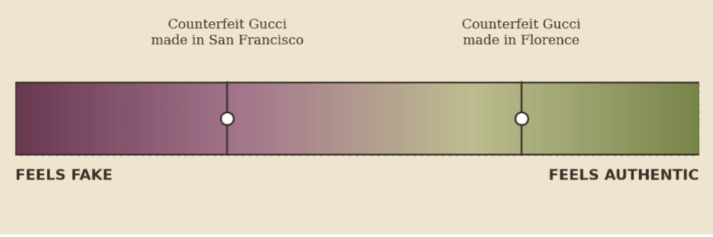

In a market stall, two counterfeit Gucci bags sit side by side, identical down to the stitching. A shopper picks one up, weighs it in her hands, sets it down, and reaches for the other instead. She can't say exactly why — only that it feels more real. Both are fake. She knows both are fake. And yet, she prefers one more than the other.
Counterfeit goods constitute one of the largest and fastest-growing illicit markets worldwide, with global estimates valuing counterfeit and pirated products at over $500 billion annually, approximately 3–4% of global trade. Despite their prevalence, consumer perceptions of counterfeit products remain puzzling. Counterfeits are, by definition, inauthentic and objectively identical across many dimensions of quality, yet consumers reliably distinguish between "better" and "worse" fakes. They express strong preferences, emotional reactions including pride and disgust, and moral judgments toward one counterfeit over another, even when they explicitly recognize both as fake.
These distinctions cannot be explained by conventional economic or informational accounts alone. The explanation researchers have converged on instead is that consumers treat authenticity as a transferable essence — one that can be strengthened or weakened by similarity, contact, proximity, and association. This idea has roots in what psychologists call the laws of sympathetic magic: "once in contact, always in contact," the principle where mere physical contact is enough to transfer an object's essential properties, positive or negative, to another object. This transfer is perceived as enduring even when people explicitly acknowledge that no material change has occurred. A related principle, the law of similarity, holds that objects resembling one another are believed to share underlying essences, which is why people recoil from chocolate shaped like feces or hesitate to drink juice labeled "poison," despite knowing full well both are harmless. The same logic runs quietly under counterfeit goods. In fact, essence transfer may also vary in degree: research has found that products manufactured closer to a brand's original source are perceived as more authentic than objectively identical alternatives made elsewhere, with proximity itself functioning as a channel for essence to travel through.
Testing the Theory
Counterfeits are uniquely suited for testing how far this contagion logic extends once authenticity has already been removed from the equation.
One proposed study tests this directly: fake Gucci sunglasses described as made either in Florence, the brand's historical origin, or in San Francisco. Holding every product attribute constant isolates geographic proximity as a pure authenticity cue. If geographic similarity truly functions as an essence-transfer cue, counterfeits produced in the same city as the original brand should be perceived as more authentic and preferred over otherwise identical counterfeits produced elsewhere.

A second study extends the same logic to people rather than places, testing whether a counterfeit described as made by a former factory worker or artisan associated with the original brand is judged as more authentic and desirable than an identical counterfeit made by someone with no such connection — essence transferred not through geography, but through continuity of skill and intention.
A third study turns to the body: participants evaluate a counterfeit Chanel perfume intended for skin application against a counterfeit Chanel room freshener intended for environmental use, testing whether bodily contact amplifies disgust and contamination above and beyond what the product itself would predict.
And a fourth pushes into moral territory directly, manipulating whether real fur embedded in a counterfeit garment is described as ethically or unethically sourced, to test whether moral taint reduces not just how appealing the product feels, but how the person wearing it feels about themselves.
If the pattern holds, it reframes what a counterfeit actually is — not a passive stand-in for the real thing, but an active symbolic object capable of carrying value and moral weight that has nothing to do with how well it's made. The practical implications follow naturally from this reframing. Ethical disclosures about how a counterfeit was produced may reduce demand more effectively than legal warnings alone, since they activate disgust and moral contamination rather than fear of getting caught. For legitimate brands, it suggests origin stories and craftsmanship narratives aren't just marketing language — they may be the very mechanism through which authenticity is felt to exist at all.
What makes this line of research compelling isn't just the specific findings, it's that authenticity isn't binary the way we assume it to be. It's something closer to a gradient, built out of proximity, resemblance, and association, that we apply even to objects we already know are fake. A counterfeit Gucci made in Florence, and one made in San Francisco are, by every objective measure, equally fake, yet the mind doesn't stop there. It keeps asking how close this object stands to what it's imitating, and answers that question with feelings of authenticity, disgust, or pride – feelings that have very little to do with the object itself.
Adapted from research conducted as a research assistant under Dr. Pankaj Aggarwal, University of Toronto.